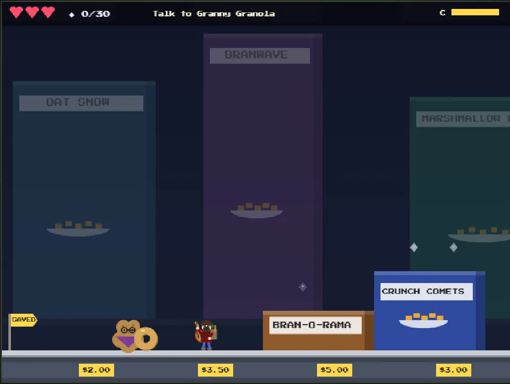
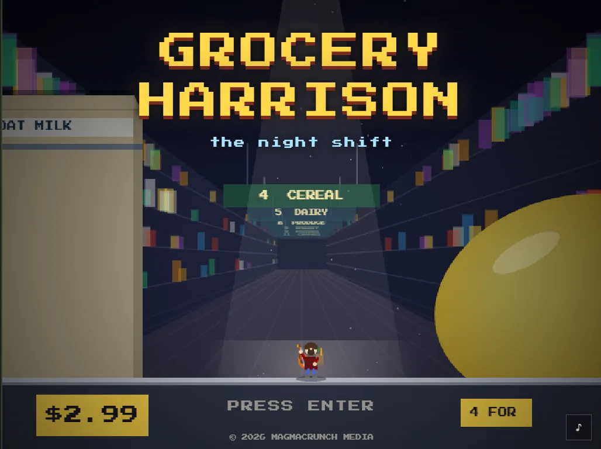
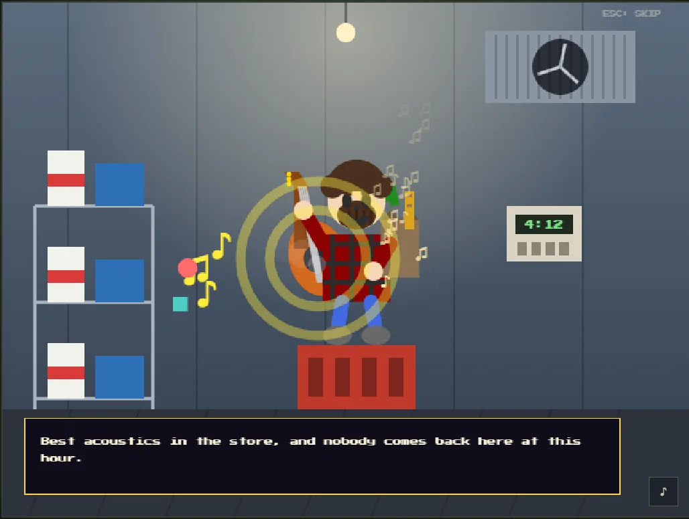

the size of a cornflake · put the store back in order, aisle by aisle
Grocery Harrison, a folk musician on the night shift, plays a strange chord in the walk-in cooler and shrinks to the size of a cornflake. Every aisle becomes a landscape to cross while you carry lost things home for the talking food.
Strum your guitar to stun weevils, collect sugar crystals to spend at the checkout, and never see a game over.


game by magmacrunch media
character Grocery Harrison, from a Bottle Boys Collective track
inspiration BurgerTime (Data East, 1982) and Overcooked (Ghost Town Games, 2016); not affiliated with or endorsed by either